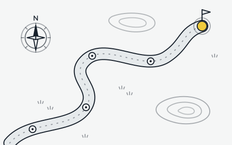

초보자 가이드
명조를 막 시작한 방랑자를 위해, 처음 며칠 동안 무엇부터 하면 좋은지 순서대로 정리했어요.

시작하기
-
메인 스토리부터 따라가기
스토리를 진행해야 지도, 상점, 육성 메뉴 같은 기능이 차례로 열려요. 처음에는 옆길로 새기보다 메인 퀘스트를 우선하는 편이 빨라요.
-
첫 뽑기 목표 정하기
시작 보상으로 받는 재화로 원하는 공명자를 노려 보세요. 마음에 드는 캐릭터를 먼저 고르고, 메인 딜러 한 명을 확보하는 걸 목표로 잡으면 좋아요.
-
파티 세 명 꾸리기
파티는 세 명이에요. 메인 딜러 한 명, 그를 돕는 서브 딜러 한 명, 회복이나 보호막을 맡는 서포터 한 명으로 시작하면 무난해요.
-
에코 모으고 끼우기
필드의 잔상을 쓰러뜨려 에코를 모으고, 공명자에게 장착해요. 처음에는 세트를 다 맞추기보다 주 옵션이 맞는 에코를 끼우는 것만으로도 충분해요.
-
스태미나 아껴 쓰기
육성 재료를 얻는 데 쓰는 스태미나는 시간이 지나면 차올라요. 넘쳐서 버려지지 않도록 하루에 한두 번 접속해 메인 딜러의 재료부터 챙겨요.
전투 기초
- 회피와 반격
- 적의 공격 직전에 회피하면 잠깐 시간이 느려지고, 이어서 반격을 넣을 수 있어요. 공격이 번쩍이는 순간을 노려 보세요.
- 공명 스킬
- 짧은 대기 시간마다 쓸 수 있는 주력 기술이에요. 공명자마다 효과가 크게 달라요.
- 공명 해방
- 에너지를 가득 모으면 쓸 수 있는 필살기예요. 강한 적이 나왔을 때 아껴 두었다가 써요.
- 교체 연계
- 교체 게이지가 가득 찼을 때 동료로 바꾸면, 들어오는 공명자는 등장 기술을 쓰고 나가는 공명자는 버프나 추가 공격을 남겨요. 명조 전투의 핵심이에요.
에코
잔상을 쓰러뜨리면 일정 확률로 그 잔상을 에코로 흡수할 수 있어요. 공명자 한 명은 에코를 최대 다섯 개까지 끼울 수 있고, 맨 앞에 끼운 에코는 전투 중에 직접 소환할 수 있어요.
에코에는 크기에 따라 1, 3, 4의 코스트가 있고 한 명이 끼울 수 있는 코스트 합계는 12예요. 가장 많이 쓰는 조합은 아래와 같아요.
같은 세트의 에코를 두 개 끼우면 첫 번째 세트 효과가, 다섯 개 끼우면 두 번째 세트 효과가 켜져요. 공명자의 속성과 맞는 세트를 고르고, 주 옵션은 공격력이나 치명타처럼 그 공명자에게 필요한 능력치로 맞춰 주세요.